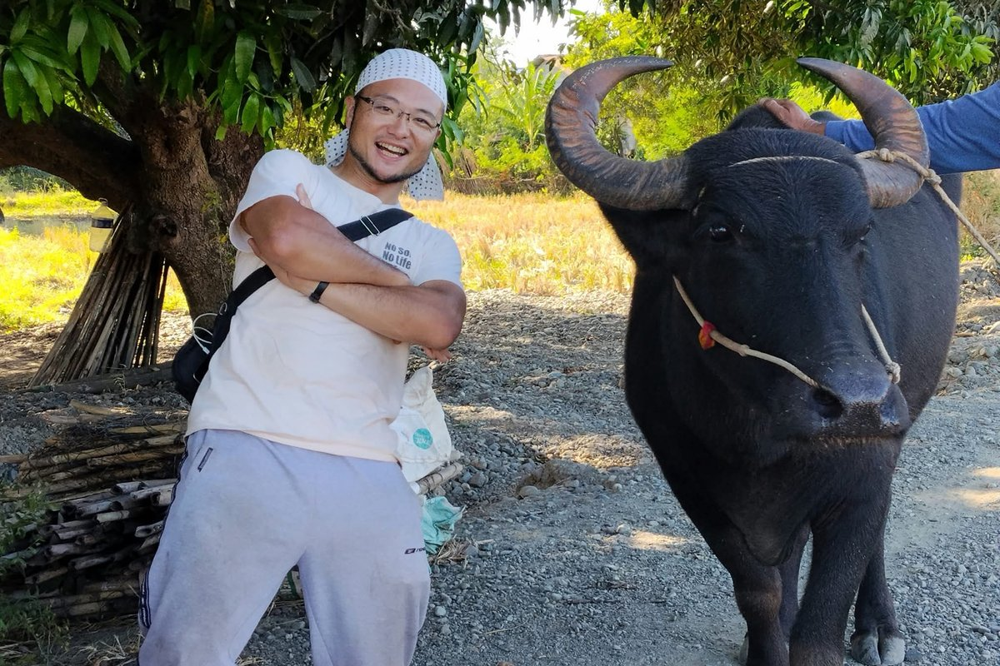
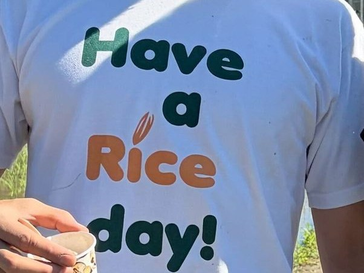

プロフィール
柴田 誠 SHIBATA Makoto
函館から約20 km、道南の上磯町（現・北斗市）の茂辺地という田舎で、のんびり育ったみたいです。小学校から高校まで野球、中学では相撲（全道大会準優勝・団体戦中堅）、大学ではヨット部でスナイプ級（七大戦優勝）、強風が好きでした。持久走は苦手ですが、スポーツは見るのもやるのも好きです。ほんの少しでも、世の中が平和でより良くなることに役立てたら、というのが夢です。腰痛に負けない！
土に興味を持ったきっかけや、これまでの調査のことは、インタビュー記事でも話しています（地球環境学堂 Sansai Newsletter No.39、2026年9月）。
経歴
- 昭和62年12月函館市生まれ
- 2000.04–2003.03上磯町立茂辺地中学校
- 2003.04–2006.02函館ラ・サール高校
- 2006.04–2010.03京都大学 農学部 資源生物科学科
- 2010.04–2012.03京都大学 大学院農学研究科 地域環境科学専攻 修士課程
- 2012.04–2015.03同 博士後期課程
- 2013.04–2015.03日本学術振興会 特別研究員（DC2）
- 2015.04–2016.03京都大学 アフリカ地域研究資料センター 研究員（SATREPS）
- 2016.04–2018.03京都大学 大学院地球環境学堂 研究員
- 2017.10–2018.03新潟食料農業大学 設置準備室 職員
- 2018.03京都大学博士（農学）
Soil Ecosystem Processes in Tropical Forests, Savanna, and Croplands of Cameroon - 2018.04–2019.08新潟食料農業大学 食料産業学部 助教
- 2019.09–2026.05京都大学 大学院地球環境学堂（農学研究科 土壌学分野 両任） 助教
- 2026.06–京都大学 大学院地球環境学堂（農学研究科 両任） 准教授
高校生向けの講義など
- 滋賀県立膳所高校 ドクター教員授業（2019年から毎年）
- 体験講義（函館ラ・サール高、新潟北高、尚志高、学法石川高、長野県赤穂高、中越高、阿賀黎明高など）
- 高校生のための体験型科学講座 京都大学 ELCAS
学会の委員など
